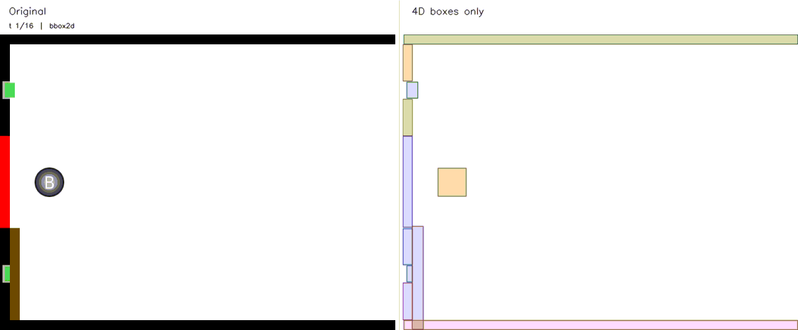
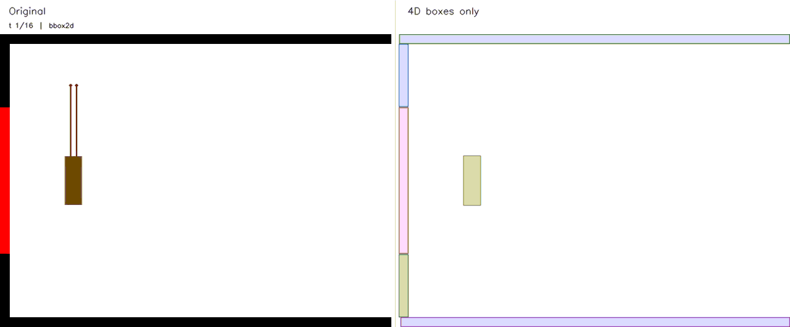
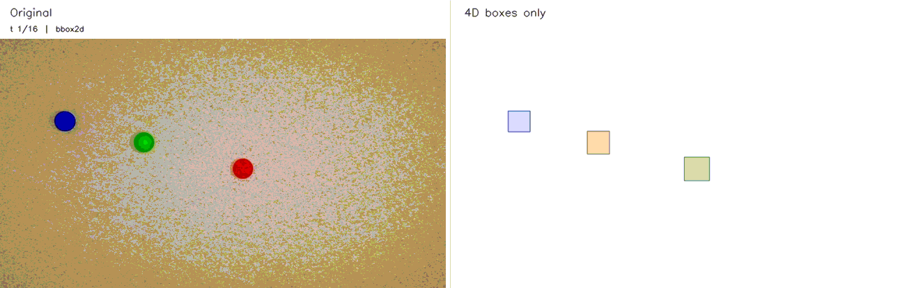
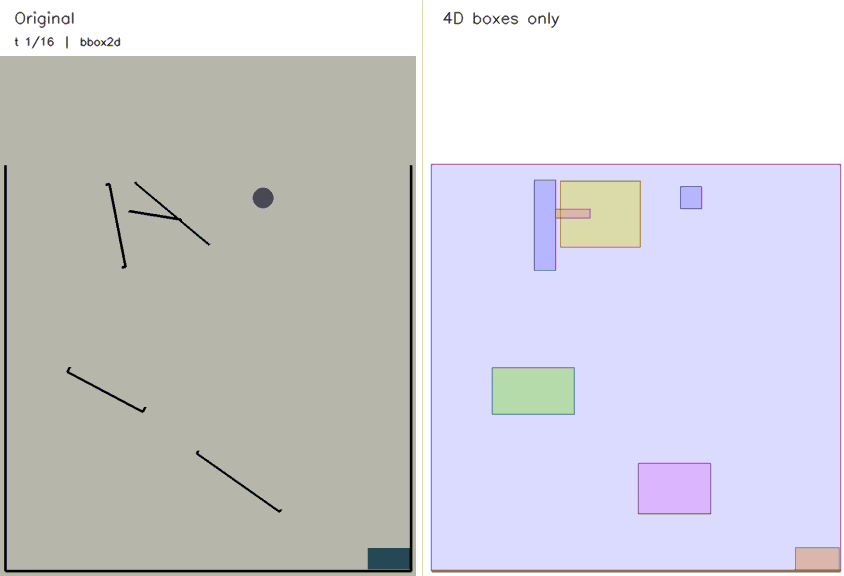
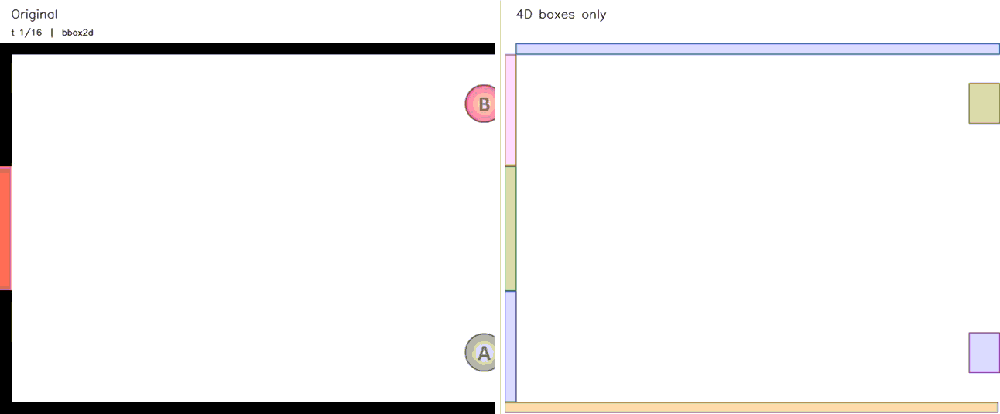

Identifier
Semantic scene understanding: objects, rough bboxes, relations, and action hints.
Qwen3-VL-ThinkingA task-adaptive parser turns heterogeneous physics video into explicit object-centric evidence, then gives each reasoner only the code its question needs.
01 · End-to-end example
This is one exact Hamrick sample. The right animation is reconstructed from predicted bboxes and camera geometry; it never copies source pixels.

02 · Physical cognitive reasoning
Drop, collision, rotation, and throw require different physical information: object position, gravity, direction, velocity, relative position, orientation, rotation, translation, and trajectory.

Unified Parser
Semantic scene understanding: objects, rough bboxes, relations, and action hints.
Qwen3-VL-ThinkingPer-object mask, track ID, score, and 2D bbox.
SAM3.1Depth, point map, camera pose, and geometry feature.
VGGT-omegaHigh-confidence 3D tracklets: 3D trajectory, visibility, and confidence.
SpatialTrackerV2
The complete path is visible: input video and question, predicted code, task-specific evidence, and typed answer.
In: video frames
Out: object IDs, rough boxes, roles
In: frames + box prompts
Out: masks, bbox2D, confidence
In: sampled video frames
Out: depth, camera poses, point maps
In: video + masks + geometry
Out: trajectories, visibility, motion
In: question + full code
Out: selected or generated evidence
In: video + question + abstracted code
Out: typed CogGym answer
03 · Parse Anything to Code
One flat temporal record from the same Hamrick example above, with exact values at t = 0, 1, 2.
Loading accepted code…04 · CogGym evaluation
We evaluate predicted geometry with mIoU and normalized Center RPE, then evaluate answers against human item means with experiment-level R².
Deterministic category, property, causal, responsibility, moral, effort, blame, or difficulty judgments.
Likelihood, chance, counterfactual belief, predictive distribution, or surprise judgments.
Each comparison uses the same valid experiments on both sides. Abstraction helps both groups for Qwen3-VL-8B-Thinking, but the effect is model-dependent rather than uniformly positive.
| Parsing | Reasoning | mIoU ↑ | Center RPE@1 (%) ↓ | Without uncertainty R² ↑ | With uncertainty R² ↑ | Overall R² ↑ |
|---|
R² is mean squared Pearson correlation across valid experiments; each cell reports its valid-experiment count. Parsing metrics are measured before task-specific evidence selection, so full-code and abstraction rows correctly share the same mIoU and Center RPE. The report passed 7 validation tests and exactly reproduced every original unsplit R².
Parsing-only detail
The Physics-280 audit contains 20 samples from each of 14 studies. Ground truth is used only after predictions are frozen.
Direct VLMs predict boxes and centers from RGB frames. Any4D, Trace Anything, and MotionCrafter are explicit component substitutions inside the same prediction-only pipeline. The default Unified Parser uses Qwen3-VL-8B-Thinking, SAM3.1, VGGT-omega, and SpatialTrackerV2.
| Method | mIoU ↑ | Center RPE@1 frame (%) ↓ | Center RPE@0.5s (%) ↓ | Center RPE@1s (%) ↓ |
|---|
Normalized Center RPE is the relative object-center displacement residual divided by the source-frame diagonal. It is evaluated on the 130 samples with released temporal 2D-center ground truth; mIoU is evaluated on all 280 samples. MotionCrafter applies to 246 video samples and excludes 34 static images. The reported variation is population SD across samples, not random-seed variation.
05 · Throughput
Identifier, 2D Mask, Analyzer, and Points Tracker timing follows the table reported in the slides.
06 · Qualitative results
Each animation places the original media at left and a bbox-only reconstruction at right. The reconstruction reads only bbox2D, bbox3D, camera, object ID, and time; it does not access source pixels, masks, depth, point maps, or tracklets.

mIoU = 89.72%

mIoU = 89.85%

mIoU = 81.71%

mIoU = 85.93%

mIoU = 94.92%
mIoU = 61.24%

mIoU = 78.05%

mIoU = 95.49%

mIoU = 90.62%

mIoU = 82.06%

mIoU = 76.88%

mIoU = 78.56%
07 · Video consistency
Qwen3-VL-8B-Thinking writes a typed Blender observation program, compares the render with the original video, and edits only prediction-derived geometry until fit, stability, and temporal consistency pass. Released ground truth is loaded only after the complete code history is frozen.

08 · Adaptive abstraction
Long context, difficult to understand. Specific task needs specific information.

| Video + Qwen3-VL-8B-Instruct | 54.0% |
| Video + Qwen3-VL-8B-Instruct + Code | 53.5% |
| Video + Qwen3-VL-8B-Instruct + Abstracted Code | 69.0% |
| Condition | Score | Iteration time |
|---|---|---|
| Video + Qwen-VL | 47.65% | N/A |
| Video + Multi-turn Selection | 64.52% | N/A |
| Video + adaptive abstraction | 66.40% | 265.13 s |
09 · Datasets